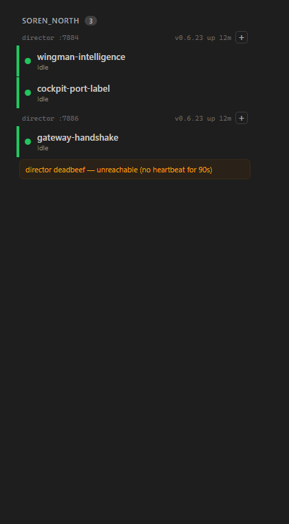
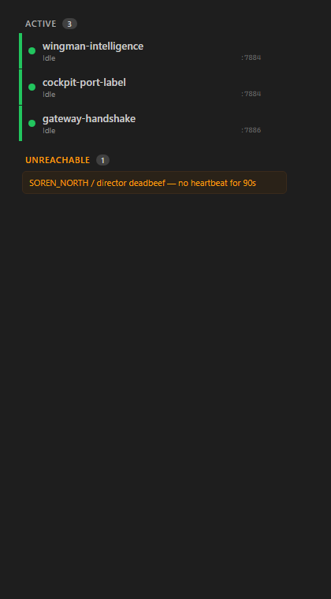
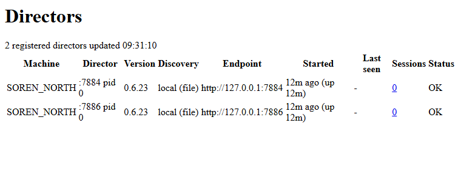

Independent of the Developer Agent's report and screenshots. The QA proof artifacts here were
re-rendered from the genuine compiled SessionRail / Directors components
in the QA worktree (the bUnit proof-emit path with QA-controlled DTOs), then screenshotted with
headless Chrome so the actual pixels were read. The [+] navigation criterion was
verified at the code level against a live Director on slot 8.
dotnet build cc-director.sln -> Build succeeded, 0 Warning(s), 0 Error(s).dotnet build src/CcDirector.Cockpit/... -> 0 Warning(s) (no new Cockpit warnings).dotnet test src/CcDirector.Cockpit.Tests -> 24 passed / 0 failed.| # | Criterion | Expected | Actual (observed) | Result |
|---|---|---|---|---|
| 1 | Tree header renders director :<port> for each Director, two distinct ports on one machine, no GUID prefix. |
director :7884 and director :7886, no 8-hex prefix. |
Rail tree shows director :7884 and director :7886 under SOREN_NORTH. No GUID prefix as label. See qa-rail-tree.png. |
PASS |
| 2 | Header no longer displays the 8-char GUID prefix as primary label. | Header text matches director :<digits>, no hex prefix. |
Grep of rendered markup: director :7884 / director :7886; no director <hex8> as a .dir-head-label. |
PASS |
| 3 | Triage sess-dir span shows :<port> resolved from the Directors registry. |
:7884 / :7886 per session. |
Triage view shows :7884, :7884, :7886 against the three sessions (registry lookup by DirectorId). See qa-rail-triage.png. |
PASS |
| 4 | Unreachable rows show :<port> when resolvable, fall back to GUID prefix when not; never blank. |
Port when the dead Director is still in the registry; GUID prefix when it is gone; never :? or blank. |
Tree + triage unreachable row for a registry-missing dead Director renders director deadbeef - unreachable ... (GUID-prefix fallback, full GUID in title). bUnit test UnreachableRow_ShowsPort_WhenDirectorStillInRegistry proves the resolvable-port path (:7884); ...FallsBackToGuidPrefix... proves no :?. Both green. |
PASS |
| 5 | Full DirectorId remains visible: rail header carries the full GUID in a title tooltip; Directors / DirectorDetail still expose it. |
Full GUID in header title; DirectorDetail shows full GUID. | Rendered markup: <span class="dir-head-label" title="a3a971fa-1111-2222-3333-444455556666">. DirectorDetail header title="@d.DirectorId" + Registration body line 146 <dd>@d.DirectorId</dd> (full GUID). |
PASS |
| 6 | Directors.razor row leads with the port and keeps the full GUID in the cell title. |
Row Director cell shows :<port>, title = full GUID. |
Directors page rows lead with :7884 / :7886 (pid ... follows); cell title="a3a971fa-...full-guid...". See qa-directors-page.png. |
PASS |
| 7 | [+] new-session and Director-open still navigate by the full DirectorId. |
Navigation unchanged - routes by full GUID, not the port. | Code verified: rail @onclick="() => OnNewSession.InvokeAsync(dir.Key)" passes the full GUID; Cockpit.OpenNewSessionFor matches by d.DirectorId == directorId and stores the full GUID. Directors.Open -> /directors/{d.DirectorId} (full GUID). Only the displayed label changed. Live Director on slot 8 healthy (full GUID 834eaa1f...). |
PASS |
| 8 | dotnet build cc-director.sln succeeds, no new Cockpit warnings. |
Build succeeded, 0 new warnings in CcDirector.Cockpit. | Solution build: Build succeeded, 0 Warning(s), 0 Error(s). Cockpit project build: 0 Warning(s). | PASS |
Rail tree view - two Directors on one machine, distinct port labels, version/uptime + [+] intact, unreachable row falling back to GUID prefix:

Triage view - per-session sess-dir port labels and the unreachable row:

Directors page - rows leading with the port (markup-only render; app.css not inlined, so unstyled - the criterion is the text content, which is correct):

[+] all intact.cockpit container; no architecture/security manifest drift.